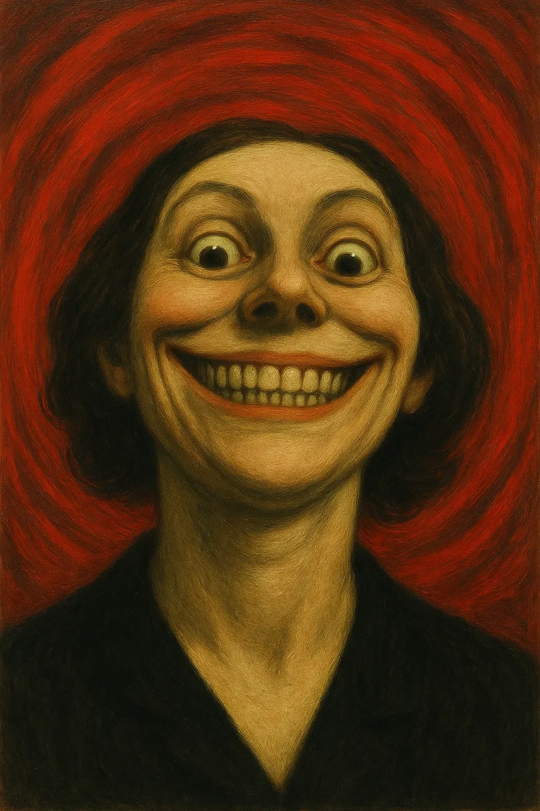

테렌스에게는 버튼을 누르지 말라고 했으니, 당연히 그는 그것을 눌렀다.
[They told Terrence not to press the button, and so naturally, he pressed it.]
그것은 니스칠이 된 빨간색이었다. 유혹과 과숙한 체리의 색깔로, 박물관의 잘 알려지지 않은 전시관 뒤편 얇은 유리판 너머에 자리잡고 있었다: 인지의 진기함: 있어서는 안 될 얼굴들. 모든 것이 인위적인 소름끼침을 풍겼다. 깜빡이는 조명, 벨벳 로프, 불안감을 조성하려 애쓰는 글꼴들. 한 명판에는 단순히 이렇게 적혀 있었다. 미소에 관여하지 말 것. 벗겨진 금박으로. 그것은 마치 도전장을 내미는 듯한 경고처럼 보였다.
[It was varnished red, the color of temptation and overripe cherries, nestled behind a thin pane of glass in the museum’s lesser-known exhibit: Curios of Cognition: Faces That Shouldn’t Be. The whole thing reeked of manufactured creep, flickering lights, velvet ropes, fonts trying too hard to be unsettling. One plaque read simply, Do Not Engage the Smile in peeling gold leaf. It looked like the kind of warning you’d put up as a dare.]
테렌스는 기념품 가게 계산대에서 훔친 납작한 클립으로 걸쇠를 비틀어 열었다. 유리가 마치 주목받게 되어 안도하는 한숨처럼 쉿 소리를 내며 위로 올라갔다. 버튼이 그의 손가락 아래에서 알고 있다는 듯한 윙크만큼 부드럽고 우쭐한 딸깍 소리와 함께 눌려 들어갔다.
[Terrence jimmied the latch with a flattened paperclip filched from the gift shop register. The glass hissed upward like a sigh relieved to be noticed. The button gave under his finger with a click as soft and smug as a knowing wink.]
그리고 나서… 침묵.
[And then… silence.]
아무것도 폭발하지 않았다. 아무것도 비명을 지르지 않았다. 처음에는.
[Nothing exploded. Nothing screamed. Not at first.]
하지만 공기가 변했다, 아주 미묘하게. 재채기 직전의 순간이나 웃음이 터지기 전의 떨림처럼.
[But the air changed, just slightly. Like the moment before a sneeze or the tremble before a laugh.]
그리고 그녀가 나타났다.
[Then came her.]
그녀는 걷는다기보다는 도착했다, 비틀거리는 중간에, 마치 세상의 대칭성을 시험하는 듯 고개를 기울인 채로. 그녀의 눈은 너무 둥글었다. 그녀의 이빨은 너무 많았다. 그녀의 머리카락은 신경질적인 신이 가른 홍해처럼 갈라져 있었다. 그리고 그 미소, 바로 그 미소는—너무 작은 토스트 조각에 버터를 바르듯 그녀의 얼굴에 퍼져 있었고, 현기증 나는 악의로 가장자리까지 늘어나 있었다.
[She didn’t walk so much as arrive, mid-lurch, head tilted as though testing the world for symmetry. Her eyes, too round. Her teeth, too many. Her hair parted like the Red Sea by a neurotic god. And the smile, that smile—spread across her face like butter over a too-small piece of toast, stretching to the edges with a giddy malice.]
“테렌스~,” 그녀가 그의 이름을 음미하듯 쉿 소리를 냈다.
[“Terrryyy,” she hissed, as if tasting his name.]
테렌스는 도망치려 했지만, 그의 발은 무른 치즈 같은 도덕적 의지력을 갖게 되었다. 그는 가장 가까운 진열장 뒤로 품위 있게 기어가는 데 성공했다.
[Terrence tried to run, but his feet had developed the moral fiber of soft cheese. He managed a dignified scoot behind the nearest display case.]
“아, 이봐, 부끄러워하지 마. 네가 버튼을 눌렀잖아. 그건 거의 프러포즈나 다름없어!”
[“Oh come on, don’t be shy. You pressed the button. That’s practically a proposal!”]
“나는 그럴 의도가—”
[“I didn’t mean to—”]
“아, 쉿, 모든 사람이 의도하는 거야.” 그녀는 제자리에서 피루엣을 돌며 극적인 기쁨으로 팔을 들어 올렸다. “웃음을 원했지, 그렇지? 자, 나는 네가 도망칠 수 없는 펀치라인이야.”
[“Oh hush, everyone means to.” She pirouetted in place, arms raised in dramatic glee. “You wanted a laugh, didn’t you? Well I’m the punchline you can’t outrun.”]
그는 박물관 안내책자를 그녀에게 던졌다.
[He threw a museum guidebook at her.]
그녀는 그것을 이빨로 받아냈다.
[She caught it in her teeth.]
그는 비명을 질렀다. 그녀는 더 넓게, 불가능할 정도로 활짝 웃었다.
[He screamed. She grinned wider, impossibly.]
“나는 죽이지 않아, 테렌스. 나는 괴롭혀. 꿈에, 반사되는 표면에, 가족 바비큐에 나타나지. 너는 나를 생각하지 않고는 다시는 코울슬로를 먹을 수 없을 거야.”
[“I don’t kill, Terrence. I haunt. I appear in dreams, reflective surfaces, family barbecues. You’ll never eat coleslaw again without thinking of me.”]
“뭘 원하는 거야?”
[“What do you want?”]
그녀가 멈췄다. 눈을 깜빡였다. 방이 마치 귀 기울이는 듯 고요해졌다.
[She stopped. Blinked. The room stilled as if listening in.]
“나는… 브런치를 원해.”
[“I want… brunch.”]
“브런치?”
[“Brunch?”]
“너와 함께.”
[“With you.”]
테렌스가 눈을 깜빡였다.
[Terrence blinked.]
“나는 와플을 좋아해,” 그녀가 이제 대본을 가진 악역처럼 서성이며 계속했다. “블루베리 와플. 그리고 대화도. 나는 70년대부터 저 유리 뒤에 갇혀 있었어. 온통 폴리에스터뿐이고 동반자는 없었지.”
[“I like waffles,” she continued, pacing now like a villain with a script. “Blueberry. And conversation. I’ve been trapped behind that glass since the seventies. All polyester and no company.”]
긴 침묵. 테렌스는 맹세를 하고도 설명할 수 없는 이유로 고개를 끄덕였다.
[A long pause. Terrence, for reasons he couldn’t explain even under oath, nodded.]
다음 날 아침, 그들은 아이러니한 조명과 위험할 정도로 작은 의자들이 있는 트렌디한 카페 ‘에그 위스퍼러'에 앉아 있었다. 그녀는 구부러지는 빨대로 미모사를 마시며 무성영화, 엔트로피, 그리고 20세기 중반 벽지에 대해 이야기했다.
[The next morning, they sat at The Egg Whisperer, a trendy café with ironic lighting and dangerously small chairs. She drank mimosas through a bendy straw and talked about silent films, entropy, and mid-century wallpaper.]
다른 사람들은 그녀를 볼 수 없었다. 적어도, 아직은.
[No one else could see her. At least, not yet.]
하지만 테렌스는 점점 커지는 불안감과 함께, 웨이터가 조금 너무 넓게 웃기 시작했다는 것을 알아챘다. 안내원은 아무도 하지 않은 농담에 너무 오래 웃었다.
[But Terrence noticed, with growing unease, that the waiter had started smiling just a bit too wide. The hostess laughed too long at a joke no one made.]
그는 포크에 손을 뻗었고 광택이 나는 금속에서 그녀의 반사를 보았다. 그녀가 윙크했다.
[He reached for his fork and saw her reflection in the polished metal. She winked.]
“너는 그 버튼을 누르지 말았어야 했어,” 그녀가 여전히 와플을 씹으며 이빨 사이로 말했다.
[“You shouldn’t have pressed the button,” she said through her teeth, still chewing waffle.]